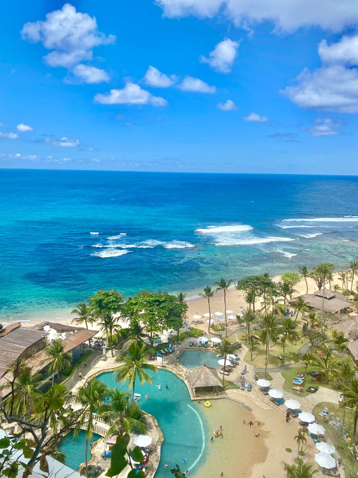
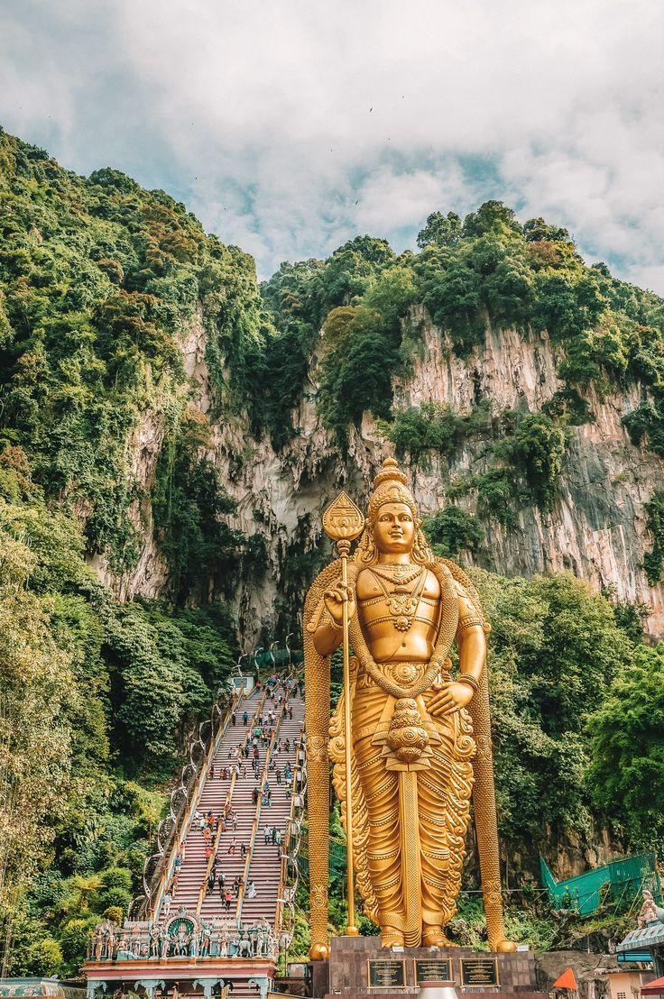

31 MAY — 01 JUN
Bali
Indonesia
A TRAVEL NOTEBOOK
Routes, stays and little discoveries, gathered as the journey takes shape.
Back to the collection01 / THE ROUTE · 31 MAY — 21 JUN 2027
Seven stops across Southeast Asia, with the travel days kept in the story.

31 MAY — 01 JUN
Indonesia
02 — 04 JUN
Singapore
04 JUN · onward to mainland Malaysia

04 JUN
Malaysia
05 JUN · onward to Redang Island
05 — 08 JUN
Malaysia
08 JUN · onward to Ho Chi Minh City
08 — 11 JUN
Vietnam
11 JUN · onward to Siem Reap
11 — 14 JUN
Cambodia
14 JUN · onward to Luang Prabang
14 — 17 JUN
Laos
17 JUN · via Vientiane, onward to Thailand
18 — 21 JUN
Thailand